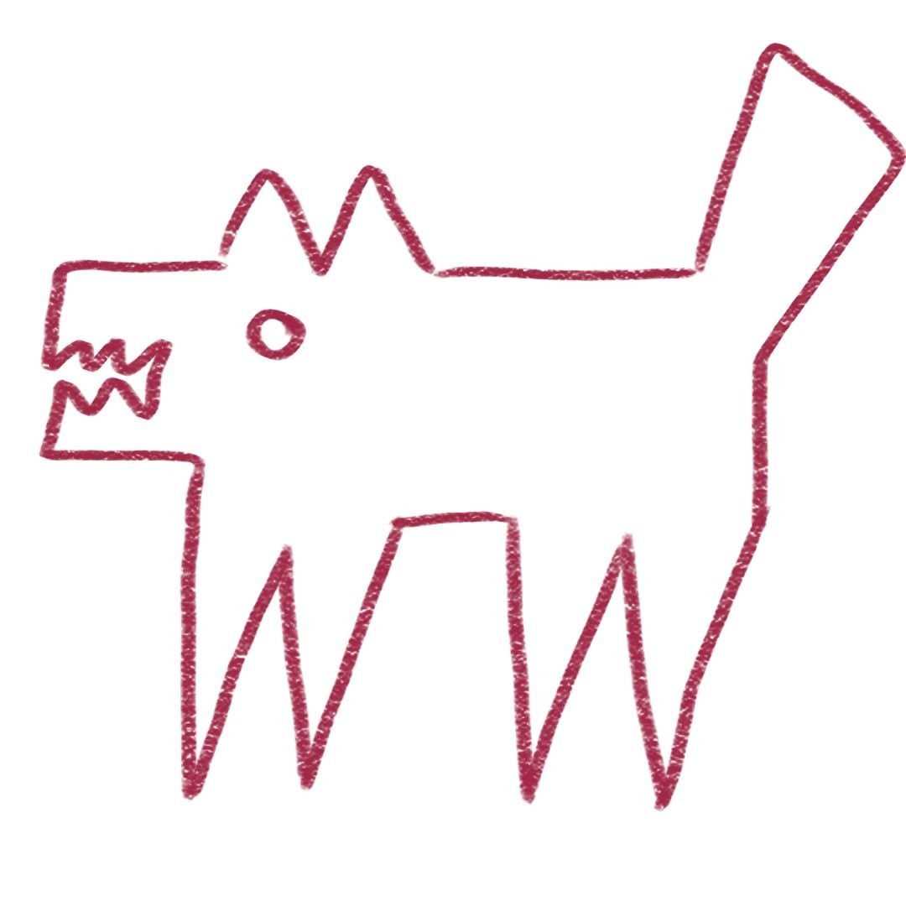

eidolon: маска, которая не прячет
синтетический эксперимент о том, что происходит с цифровым следом, когда человек пытается исчезнуть. сайт нарисован руками, как и пёс справа.
600 виртуальных пациентов, 90 дней, 2 миллиона событий, 51 поведенческий признак. вопрос: маскировка делает человека менее узнаваемым или делает его заметным шаблоном? ответ: и то и другое сразу, и это не парадокс. ниже: цифры, честные провалы и объяснение как пятилетнему.
цифры
каждую можно пересчитать самому, команда лежит рядом в репозитории.
как пятилетнему: вопросы и ответы
отвечает пёс. он же маскот проекта.
- что такое цифровой след?
- ты ходишь по сайту клиники: открыл в обед, полистал анализы, закрыл. когда открыл, что смотрел, как долго, с какой паузой — всё это записывается. это и есть след: не имя, а манера.
- а при чём тут маска?
- человек решает сбить слежку с толку: ходит в другое время, тыкает кнопки в случайном порядке, сидит неестественно долго или коротко. мы построили таких виртуальных людей и посмотрели, что стало с их следом.
- и что стало?
- у детерминированной маски — беда: все маскированные стали похожи друг на друга, как клоуны из одного цирка. спрятаться не удалось, зато стало видно издалека: вот идёт человек в маске. у шумной маски лучше: личность спряталась. но сам факт, что ты в маске, виден по ровному ритму кнопок.
- так маска помогает или нет?
- личность спрятать можно — наши числа это показывают. но спрятать то, что ты прячешься, нельзя: и не надо притворяться, что твоя маска — это просто странная походка. детекторы видят и то и другое.
- почему у вас в работе половина ответов «не подтвердилось»?
- потому что мы сначала записали, что ожидаем, потом измерили, и записали всё как вышло. теория говорила «маска делает уникальным» — измерение сказало «делает шаблонным». мы поверили измерению. в науке это дороже красивой истории.
- это про настоящих пациентов?
- нет. все пациенты нарисованы программой, ни одной настоящей карты не тронуто. это полигон: на нём видно механизм. реальную клинику это проверит отдельная работа.
- а можно потрогать?
- можно и нужно: код открыт, сборка одной командой make, два запуска дают файлы, совпадающие до последнего байта. каждая цифра на этой странице пересчитывается командой из readme.
- почему пёс такой кривой?
- потому что нарисован руками, как и этот сайт. серьёзная наука не обязана выглядеть как корпорация. кривая линия всё равно показывает, где точки.
что не выдержало проверки
мы оставляем это в проекте нарочно: negative results это тоже результат.
- сильный парадокс опровергнут. теория предсказывала rank-1 аномальный и уникальный профиль; измерение дало participation ratio 2.38 при пороге 2.0 и упало от порога по доле первой компоненты (0.50 при пороге 0.80).
- уникальность не растёт, а падает. idu_cohort 0.065 против 3.86 у естественных: маска делает профиль заметным для детектора, но неотличимым от других масок.
- «маскированные неразличимы» — не тест. среднее по моделям прятало противоположные знаки; пер-модельные тесты расходятся, выбранная модель даёт ничью.
- «маска уничтожает идентичность» — слишком сильно. внутри маскированной области детерминированная маска узнаваема на 17× шанса через 17 шаблонов; правильная формулировка: перенос идентичности между областями сломан, а не личность стёрта.
- прогноз без навыка. предсказание суточной активности не лучше среднего пациента: within-patient r2 отрицательный, гипотеза о пределе долгосрочного прогноза снята.
- ранг-1 зависит от конструкции. другая маска на тех же параметрах даёт participation ratio 1.55 и проходит порог; универсальный claim не держится.
текст работы и честность
препринт: paper/preprint.md (русский, черновик). отклонения от пререгистрации: paper/deviations.md. про помощь ии честно: paper/AI_ASSISTANCE.md. граница проверенного: PROVENANCE.md.
код и ci: репозиторий. лицензия кода MIT, статьи и данных CC BY 4.0. реальных пациентов и персональных данных не существует: вся когорта рисуется генератором.